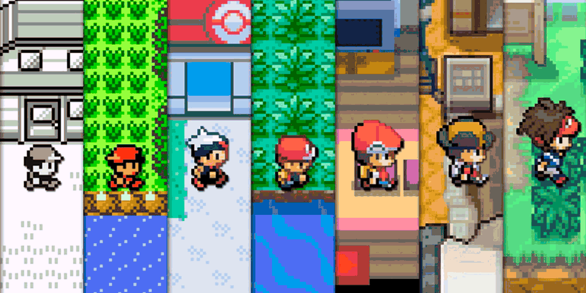

VIDEOJUEGO
La serie de videojuegos de Pokémon, también referida como la saga principal de Pokémon, son videojuegos de rol desarrollados principalmente por Game Freak y publicados para videoconsolas portátiles de Nintendo.
La serie se divide en generaciones Pokémon, las cuales son los grupos de videojuegos lanzados en un cierto período y que comparten una serie de características similares, concretamente los personajes y criaturas (Pokémon) y la región donde se sucede la historia. Estas generaciones suelen corresponderse con las generaciones de las consolas. La aparición sucesiva de generaciones suele tener como consecuencia la publicación de nuevas entregas de diversos productos derivados de los videojuegos, como la serie de anime Pokémon.

La generación original, donde empezó todo, esta se corresponde con los videojuegos Pokemon Green (publicado solo en Japón) Pokémon Rojo, Pokémon Azul y Pokémon Amarillo para Game Boy puestos a la venta en 1996. Debido a que el nombre de estos juegos proviene de colores, también se les conoce como generación cromática.
En Japón las ediciones comercializadas fueron en un principio la Roja y la Verde, con Charizard y Venusaur en la portada respectivamente. La Edición Azul (cuya mascota era Blastoise) fue una versión "especial" la cual contaba con mejoras como la reedición de los sprites de cada Pokémon. La Edición Amarilla (con Pikachu como la mascota) fue una versión especial de Pokémon Rojo y Pokémon Azul y se comercializó en todo el mundo. La premisa de esta edición fue asemejar los juegos al anime (empezar con Pikachu, capturar a Bulbasaur, Charmander y Squirtle, etc.). Los iniciales de la primera generación son: Bulbasaur, Charmander y Squirtle. Más tarde, el par de videojuegos original de esta generación tuvo una adaptación en la tercera generación, para Game Boy Advance y su reedición, Pokémon Amarillo, tuvo remake en la séptima generación, para Nintendo Switch.
La acción se desarrolla en la zona geográfica ficticia de Kanto.
El número de Pokémon de estas ediciones es 151. De todos modos, sobre el Pokémon número 151, Mew hay cierta controversia de que fuera posible conseguirlo en las ediciones originales de Game Boy de un modo convencional. Los videojuegos de la primera generación de Pokémon fueron un rotundo éxito que generó un "boom" mundial. Estos videojuegos acabaron cosechando más de 47 millones de copias vendidas, transformándose así en uno de los videojuegos más vendidos de la historia. Siendo actualmente el sexto videojuego más vendido de la historia. Los juegos entraron al Libro Guiness de los Récords Mundiales en la categoría de «Mejor juego vendido de RPG para la Game Boy» y «Mejor juego vendido de género RPG de todos los tiempos» en el año de 2009. Siendo la primera generación, introduce elementos importantes a la franquicia como son los Pokémon iniciales, los Pokémon legendarios, el sistema clásico de los ocho gimnasios, el Alto Mando, el campeón y el equipo malvado que desea conquistar el mundo con la ayuda de los Pokémon. Esta primera generación también contó con otros juegos que no forman parte de la línea principal de la saga, pero sí de la generación, como el videojuego de la consola Nintendo 64, Pokémon Stadium, o el videojuego de Game Boy Color, Pokémon Trading Card Game.
El número de Pokémon de estas ediciones es 151. De todos modos, sobre el Pokémon número 151, Mew hay cierta controversia de que fuera posible conseguirlo en las ediciones originales de Game Boy de un modo convencional. Los videojuegos de la primera generación de Pokémon fueron un rotundo éxito que generó un "boom" mundial. Estos videojuegos acabaron cosechando más de 47 millones de copias vendidas, transformándose así en uno de los videojuegos más vendidos de la historia. Siendo actualmente el sexto videojuego más vendido de la historia. Los juegos entraron al Libro Guiness de los Récords Mundiales en la categoría de «Mejor juego vendido de RPG para la Game Boy» y «Mejor juego vendido de género RPG de todos los tiempos» en el año de 2009. Siendo la primera generación, introduce elementos importantes a la franquicia como son los Pokémon iniciales, los Pokémon legendarios, el sistema clásico de los ocho gimnasios, el Alto Mando, el campeón y el equipo malvado que desea conquistar el mundo con la ayuda de los Pokémon. Esta primera generación también contó con otros juegos que no forman parte de la línea principal de la saga, pero sí de la generación, como el videojuego de la consola Nintendo 64, Pokémon Stadium, o el videojuego de Game Boy Color, Pokémon Trading Card Game.
Página web creada por: David Bolívar - 2024